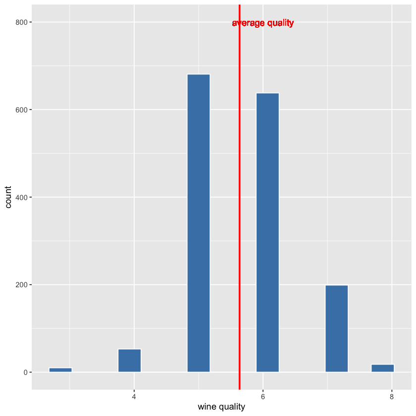
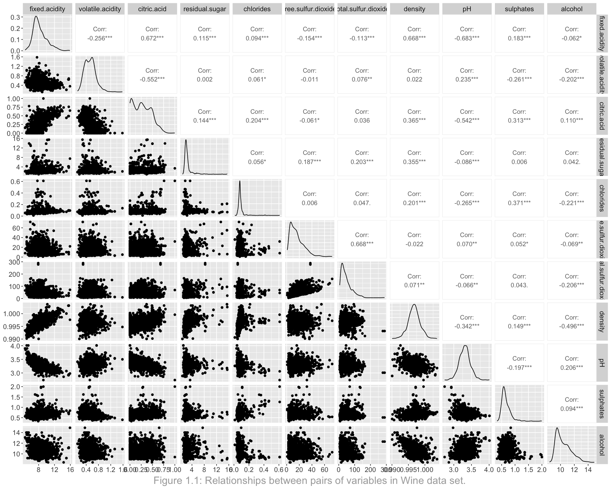
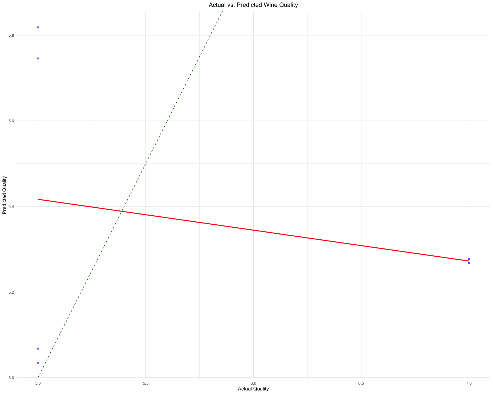

The downloaded binary packages are in
/var/folders/k9/qkhqzgnj1b7cpy3y24kcm4rw0000gn/T//RtmpVfXoG5/downloaded_packages
The downloaded binary packages are in
/var/folders/k9/qkhqzgnj1b7cpy3y24kcm4rw0000gn/T//RtmpVfXoG5/downloaded_packages
The downloaded binary packages are in
/var/folders/k9/qkhqzgnj1b7cpy3y24kcm4rw0000gn/T//RtmpVfXoG5/downloaded_packages
The downloaded binary packages are in
/var/folders/k9/qkhqzgnj1b7cpy3y24kcm4rw0000gn/T//RtmpVfXoG5/downloaded_packagesPredicting Wine Quality: Insights from Physicochemical Properties üç∑
1. Summary
This analysis project attempted to explore the predictive relationships between the physicochemical properties of wine and its quality, utilizing regression analysis and a forward selection algorithm to identify key predictors. Our investigation was motivated by the wine industry’s increasing reliance on data analysis and machine learning to enhance wine quality assessments, aiming to decode the complex interplay between a wine’s chemical makeup and its sensory appeal. Despite the sophisticated methodology and the comprehensive dataset from the UCI Machine Learning Repository (Cortez et al. 2009), our findings revealed the model’s limited predictive capability, with a low R-squared value highlighting a significant portion of unexplained variability in wine quality. This outcome, while not entirely unexpected given the nuanced nature of wine quality determination, shows the limitations of linear regression models in capturing the intricate factors that influence wine quality. The analysis points to potential areas for improvement, such as incorporating more or better-quality data, considering additional variables, and employing more complex modeling techniques. Our study thus not only contributes to the academic discourse on predictive modeling in the wine industry but also sets the stage for future research that could leverage advanced analytics to unravel the complexities of wine quality assessment, supporting the industry’s pursuit of excellence and innovation in wine production and evaluation.
2. Introduction
Wine has been a symbol of culture and refinement throughout human history, with its production dating back thousands of years. The complexity of wine, influenced by its physicochemical properties (JJ Buckley Fine Wines 2018), has fascinated scientists and winemakers alike. In recent years, the wine industry has increasingly turned to data analysis and machine learning to understand and predict wine quality. This scientific approach aims to decode the relationship between the chemical composition of wine and its quality as perceived by consumers.
In this project, our primary goal was to determine the best regression model for predicting wine quality and to identify which factors most effectively predict it. The quality of wine is a subject of interest for both enthusiasts and professionals in the field, as it can vary significantly based on a variety of measurable physicochemical properties. By applying regression analysis, we aimed to uncover the relationships between these properties and wine quality, thereby providing a predictive model that could be useful for winemakers and consumers alike. Our research question was formulated as follows: “What is the best regression model to predict wine quality?”
To address this question, we utilized a dataset that comes from the UCI Machine Learning Repository (Cortez et al. 2009), featuring two datasets related to red and white variants of the Portuguese “Vinho Verde” wine. These datasets include 4,898 instances, with 11 features covering various physicochemical properties (such as acidity, sugar level, alcohol content) and 1 output variable representing sensory quality ratings on a scale. The datasets present an opportunity for both classification and regression analyses to model wine quality based on these properties.
Our approach involved conducting a comprehensive analysis to explore the relationships between the physicochemical attributes and the quality scores. Through the use of regression analysis and the implementation of a forward selection algorithm, we aimed to identify the most significant predictors of wine quality. This process allowed us to not only pinpoint the factors that have the most substantial impact on quality but also to determine the most accurate regression model for predicting the quality scores of wine based on its properties.
3. Methods and Results
3.1 Data Cleaning and Wrangling
- '3'
- '4'
- '5'
- '6'
- '7'
- '8'
3.2 Exploratory data analysis (EDA)



From Figure 3 above, we notice that there are some variables that has high correlation with others: - citric.acid and fixed acidity - PH and citric.acid - density and fixed acidity - free.sulfur.dioxide and total.sulfur.dioxide
In order to prevent multicollinearity, we decide to remove citric.acid, density and free.sulfur.dioxide
| fixed.acidity | volatile.acidity | residual.sugar | chlorides | total.sulfur.dioxide | pH | sulphates | alcohol | quality | |
|---|---|---|---|---|---|---|---|---|---|
| <dbl> | <dbl> | <dbl> | <dbl> | <dbl> | <dbl> | <dbl> | <dbl> | <int> | |
| 1 | 7.4 | 0.70 | 1.9 | 0.076 | 34 | 3.51 | 0.56 | 9.4 | 5 |
| 2 | 7.8 | 0.88 | 2.6 | 0.098 | 67 | 3.20 | 0.68 | 9.8 | 5 |
| 3 | 7.8 | 0.76 | 2.3 | 0.092 | 54 | 3.26 | 0.65 | 9.8 | 5 |
| 4 | 11.2 | 0.28 | 1.9 | 0.075 | 60 | 3.16 | 0.58 | 9.8 | 6 |
| 5 | 7.4 | 0.70 | 1.9 | 0.076 | 34 | 3.51 | 0.56 | 9.4 | 5 |
| 6 | 7.4 | 0.66 | 1.8 | 0.075 | 40 | 3.51 | 0.56 | 9.4 | 5 |
3.3 Method
| fixed.acidity | volatile.acidity | residual.sugar | chlorides | total.sulfur.dioxide | pH | sulphates | alcohol | quality | |
|---|---|---|---|---|---|---|---|---|---|
| <dbl> | <dbl> | <dbl> | <dbl> | <dbl> | <dbl> | <dbl> | <dbl> | <int> | |
| 1 | 10.4 | 0.44 | 6.55 | 0.074 | 76 | 3.17 | 0.85 | 12.0 | 7 |
| 2 | 6.8 | 0.83 | 1.80 | 0.074 | 25 | 3.38 | 0.45 | 9.6 | 5 |
| 3 | 12.2 | 0.45 | 1.40 | 0.075 | 6 | 3.13 | 0.63 | 10.4 | 5 |
| 4 | 6.8 | 0.36 | 1.80 | 0.067 | 8 | 3.36 | 0.55 | 12.8 | 7 |
| 5 | 8.4 | 0.36 | 2.20 | 0.081 | 79 | 3.30 | 0.72 | 11.0 | 6 |
| 6 | 8.7 | 0.82 | 1.20 | 0.070 | 48 | 3.20 | 0.58 | 9.8 | 5 |
In order to select the best LR model, we will use forward selection because it enables a more efficient selection process than a process such as backward selection. To begin, we will split our data into training data as you can see from Table 2 and testing data. To apply forward stepwise selection, we will start with the intercept-only model, select and add variables sequentially, and finally select the best model of the p models, where p = number of predictor variables. The “best” model can be defined by metrics such as the test MSE which can be revealed with Cp or BIC or adjusted \(R^2\) for predictive model selection. Specifically, we can look for the model with biggest adjusted \(R^2\), which indicates a stronger out-of-sample prediction accuracy.
We will obtain 8 possible models obtained using forward selection method.
| n_input_variables | RSQ | RSS | ADJ.R2 |
|---|---|---|---|
| <int> | <dbl> | <dbl> | <dbl> |
| 1 | 0.2625017 | 443.6771 | 0.2617311 |
| 2 | 0.3429754 | 395.2643 | 0.3416009 |
| 3 | 0.3584219 | 385.9718 | 0.3564065 |
| 4 | 0.3635412 | 382.8920 | 0.3608726 |
| 5 | 0.3692863 | 379.4358 | 0.3659772 |
| 6 | 0.3715254 | 378.0887 | 0.3675644 |
| 7 | 0.3723643 | 377.5841 | 0.3677445 |
| 8 | 0.3727042 | 377.3796 | 0.3674217 |
From Table 3, the adjusted \(R^2\) will start decreasing after 14 variables are selected. Hence we will be using the model with 7 variables which you can find below.
- 'volatile.acidity'
- 'residual.sugar'
- 'chlorides'
- 'total.sulfur.dioxide'
- 'pH'
- 'sulphates'
- 'alcohol'
| predictedQuality | quality | |
|---|---|---|
| <dbl> | <int> | |
| 1 | 5.034839 | 5 |
| 2 | 5.067650 | 5 |
| 3 | 5.267518 | 7 |
| 4 | 5.277228 | 7 |
| 5 | 5.745658 | 5 |
| 6 | 5.818305 | 5 |
| .metric | .estimator | .estimate |
|---|---|---|
| <chr> | <chr> | <dbl> |
| rmse | standard | 1.0955105 |
| rsq | standard | 0.0491032 |
| mae | standard | 0.8536178 |

4. Discussion
4.1. Summary and Expectations
The analysis employed regression analysis and a forward selection algorithm to identify key predictors of wine quality. The process began with splitting the data into training and testing sets, followed by applying forward stepwise selection to sequentially add variables and select the best model based on metrics such as adjusted R², indicating out-of-sample prediction accuracy. This method aimed to pinpoint the most significant factors affecting wine quality and determine the most accurate regression model for predicting quality scores based on wine properties. The results from the model suggest that it has limited predictive power. The R-squared value as shown in Table 5 indicates that only about 4.9% of the variability in wine quality can be explained by the model, which is quite low. This means that there’s a lot of unexplained variability, and the model might not be capturing all the factors that influence wine quality. The root mean square error (rmse) of around 1.096 and the mean absolute error (mae) of approximately 0.854 indicate that on average, the model’s predictions deviate from the actual quality values by about one point on the quality scale. These metrics together suggest the model’s predictions are not very accurate and there’s substantial room for improvement. The outcome of the regression plot suggests that the model does not perform as well as expected, especially at the higher end of the actual quality scores. The model seems to underestimate the quality of higher-quality wines and overestimate the quality of lower-quality wines. This could indicate that the model’s assumptions or the linearity of the predictors do not hold across the entire range of the quality scores. This may be due to several reasons:
Model Complexity: The model might be too simple (underfitting), not capturing the complex relationships between predictors and wine quality.
Predictor Selection: The forward selection algorithm may not have included all relevant predictors, or it may have included irrelevant or noisy predictors.
Data Quality and Quantity: If the data has errors, outliers, or there’s not enough data, the model’s predictions can be affected. The dataset may also be imbalanced with respect to the quality scores, affecting prediction for underrepresented scores.
Non-linear Relationships: The relationship between predictors and response may be non-linear or might involve interactions that the linear model does not capture.
In summary the low R-squared could have been expected given the complex nature of wine quality assessment, which is influenced by numerous subtle factors that may not be captured by the model. Improving the model would likely involve incorporating more or better-quality data, considering additional variables, and possibly using more complex modeling techniques that can handle the interplay of factors affecting wine quality.
4.2. Impact and Future Questions
Impact: The implications of this analysis extend beyond its immediate academic context, shedding light on the inherent complexities of predicting wine quality through quantitative models. Despite the model’s limited predictive power, as evidenced by a low R-squared value and substantial prediction errors as seen in Table 5 and Table 4, this analysis shows the multifaceted nature of wine quality assessment, which is influenced by a myriad of subtle factors not easily quantifiable. From a practical standpoint, the study highlights the challenges faced by quality assessors in standardizing wine quality metrics, suggesting that reliance on quantitative models alone may not suffice for capturing the nuanced essence of wine quality. Moreover, the findings advocate for a more holistic approach in wine quality evaluation, one that perhaps integrates both objective measurements and subjective expertise. For the wine industry, embracing such complexities and exploring advanced modeling techniques could pave the way for more nuanced quality assessment methods, potentially leading to improved product differentiation and marketing strategies. Ultimately, this analysis serves as a stepping point for future research aimed at refining the predictive accuracy of wine quality models, encouraging a multidisciplinary approach that encompasses sensory analysis, chemistry, and consumer preferences to better understand the determinants of wine quality.
Future Questions: Building on our initial analysis, future research could explore the impact of environmental changes like climate on the physicochemical composition of wine, delve into the genetic factors influencing grape quality, and employ advanced machine learning algorithms to uncover complex relationships between wine characteristics and sensory perceptions. Specifically, alternative data analysis methods such as deep learning and neural networks (Pascua et al. 2023) could be employed to analyze large datasets more effectively, identifying non-linear relationships and subtle patterns that traditional statistical methods may miss. Additionally, integrating big data analytics to process and analyze the vast amount of data generated from different wine regions could offer unprecedented insights into regional and varietal influences on wine quality. Investigating alternative fermentation techniques and conducting comparative studies across different wine regions could reveal new insights into optimizing wine quality. These efforts should embrace interdisciplinary approaches, combining advanced data analysis, biotechnology, and sensory evaluation to enhance our understanding of wine quality. Such research would not only deepen our knowledge of the factors affecting wine but also support the industry in adapting to evolving challenges and preferences, ultimately enriching the wine production and selection process.
References
Cortez, Paulo, A. Cerdeira, F. Almeida, T. Matos, and J. Reis. 2009. “Wine Quality.” https://archive.ics.uci.edu/ml/datasets/wine+quality.
JJ Buckley Fine Wines. 2018. “The 4 Factors and 4 Indicators of Wine Quality.” 2018. https://www.jjbuckley.com/wine-knowledge/blog/the-4-factors-and-4-indicators-of-wine-quality/1009.
Pascua, K. B., H. D. Lagura, G. S. Lumacad, A. K. N. Pensona, and M. J. I. Jalop. 2023. “Combined Synthetic Minority Oversampling Technique and Deep Neural Network for Red Wine Quality Prediction.” In 2023 International Conference in Advances in Power, Signal, and Information Technology (APSIT), 609–14. https://doi.org/10.1109/APSIT58554.2023.10201733.